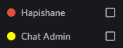
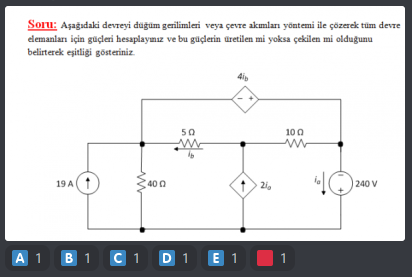

Özellikler
Uyarı
SınıfBot'un düzgün çalışabilmesi için Hapishane ve Chat Admin rollerini silmeyiniz.
#1
Kanala atılan fotoğrafların altına
 şıklarını ekler.
şıklarını ekler.
#2
emojisi fotoğrafı raporlamak için kullanılır. Rapor sayısı 10 oya
ulaştığında fotoğraf kaldırılır.
#3
Eğer fotoğrafın altına şık eklenmesini istemiyorsanız mesaj kısmında nokta (.)
kullanabilirsiniz.
#4
Saniyede birden fazla yazı yazılamaz. Yazmaya çalışan 1 dakika chat ban yer. 1 dakika boyunca o sunucudaki hiçbir kanala yazı yazamaz.
#5
Sunucudaki her kullanıcı !pin komutunu kullanabilir.
#6
!yetki komutu çift yönlü kullanılabilir. Herhangi bir kullanıcıya Chat
Admin** rolü vermek ya da geri almak için aynı komutu
!yetki @kullanıcı-adı şeklinde kullanabilirsiniz.
** Chat Admin'ler sadece !ban ve
!unban komutlarını
kullanabilir.
#7
SınıfBot yasaklı kelimeler** listesindeki kelimeleri kullananları chatten 1 dakikalığına banlar.
** Yasaklı kelimeler listesi sabittir. Her sunucu için aynıdır ve değiştirilemez.
#8
Kötü niyetli komut kullanan veya spam atanları raporlamak için
!report @kullanıcı-adı sebep komutunu her kullanıcı kullanabilir.